Rendre Visible l'Invisible : Journée mondiale du refus de la misère
Aftermovie / Non à l'absurdité administrative !
Nous étions à nouveau présent cette année à l'événement du front Rendre Visible l'Invisible dans le cadre de journée mondiale du refus de la misère afin de filmer l'événement. Cette année, la thématique était l'absurdité administrative qui prive les personnes de leurs droits fondamentaux. Nous sommes fiers de vous présenter la rétrospective !
Réalisation: Jonas Guyaux et Emma Landet-Lacoste

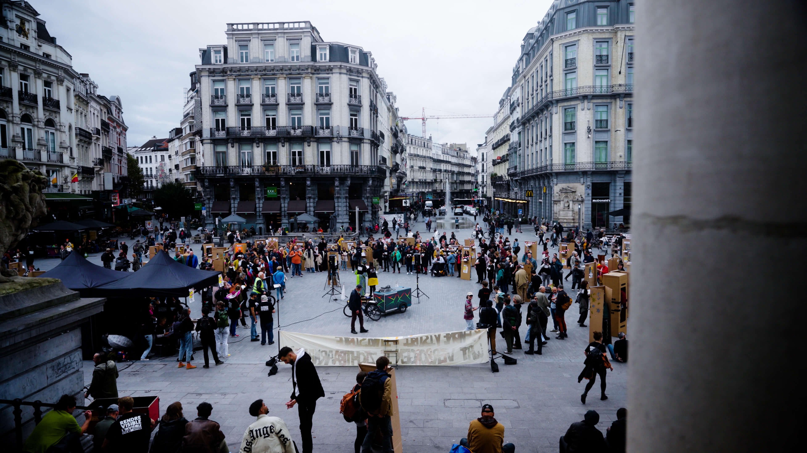
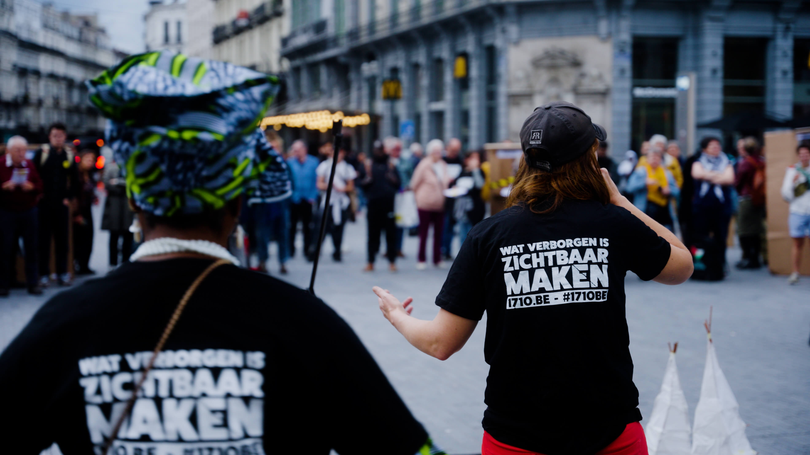
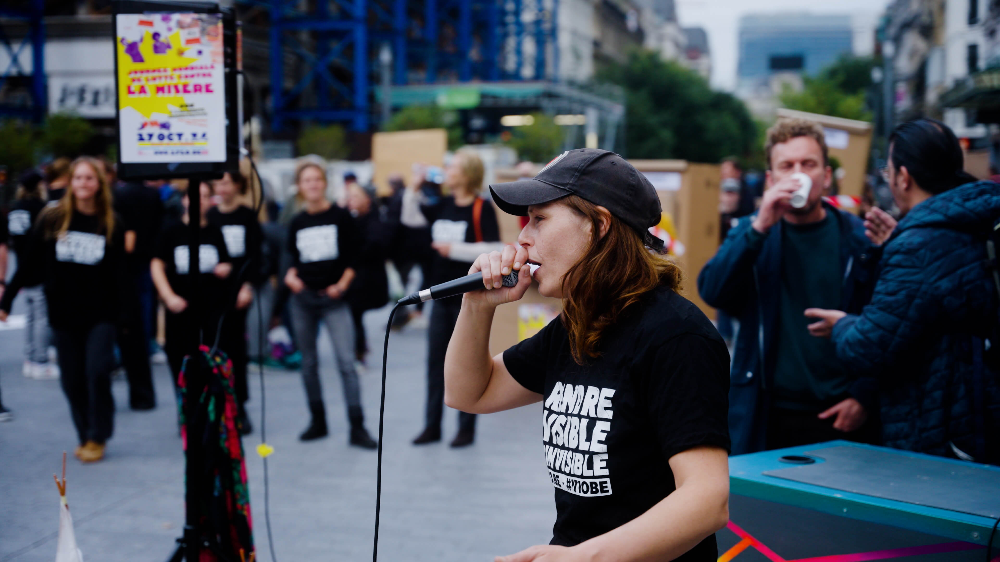
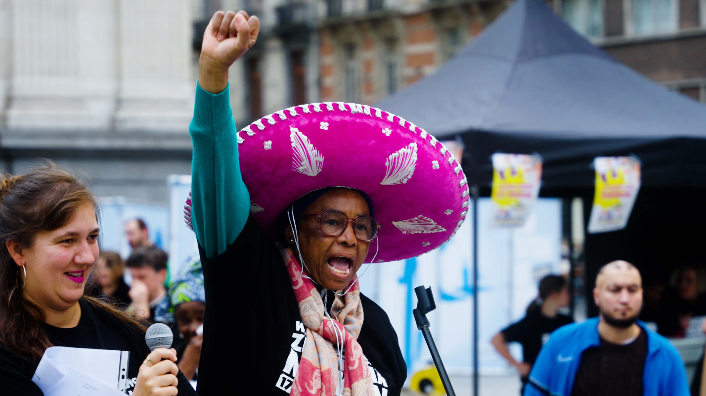
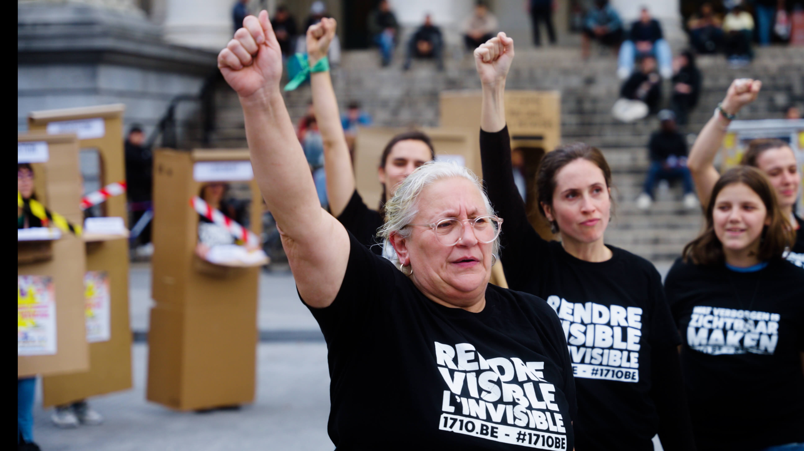
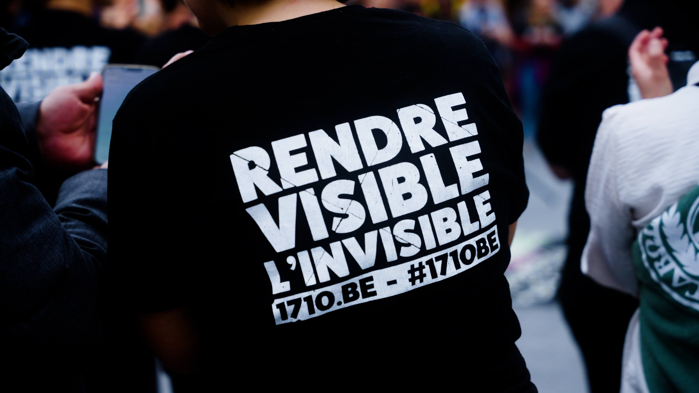
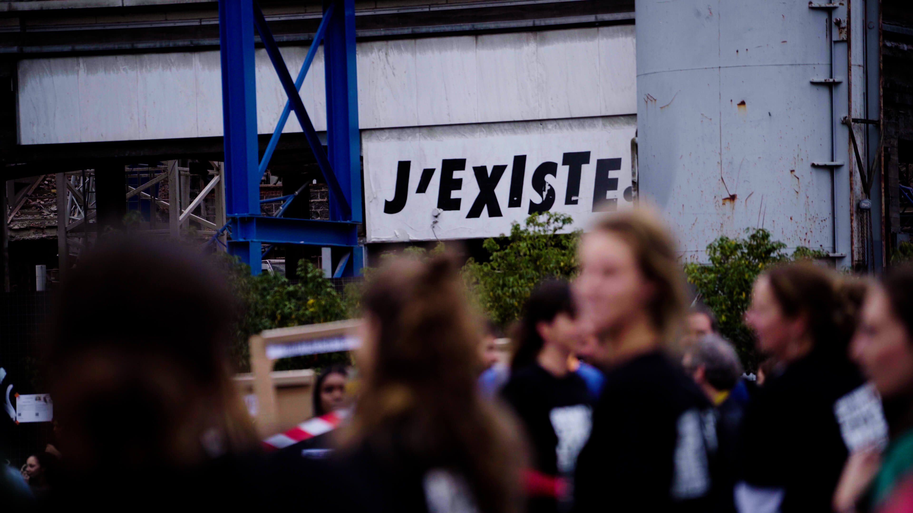
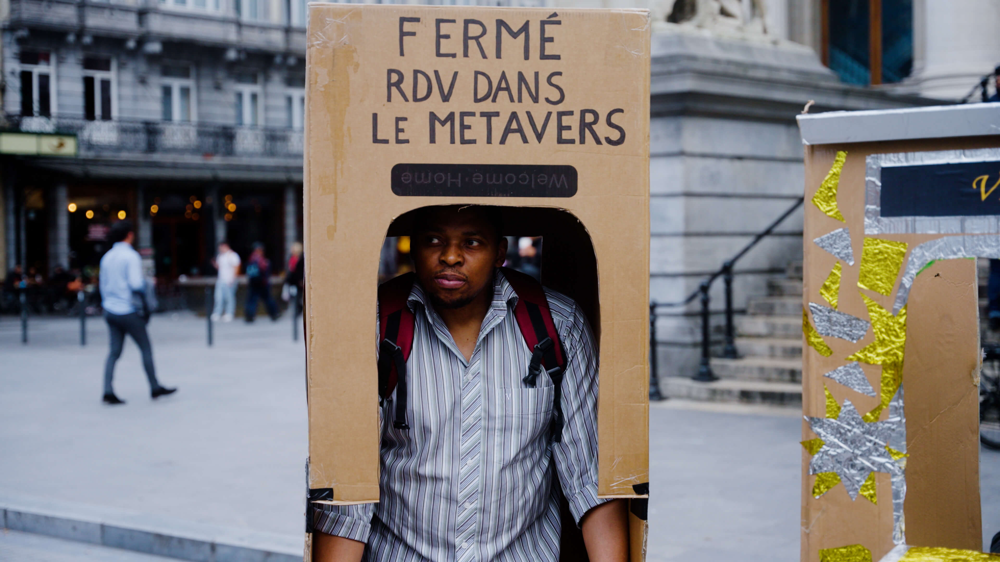
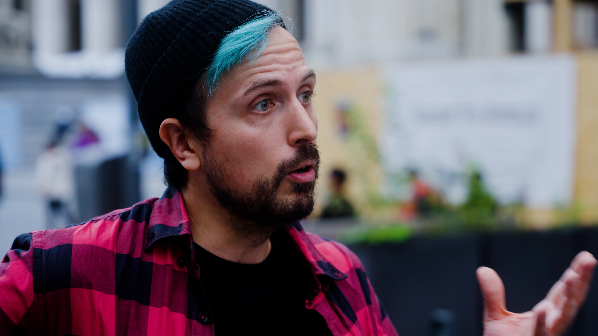
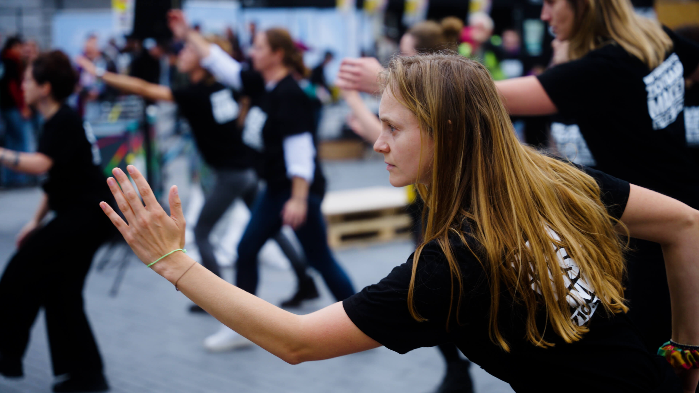
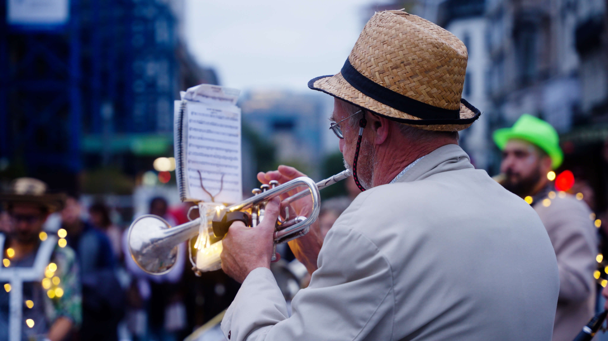
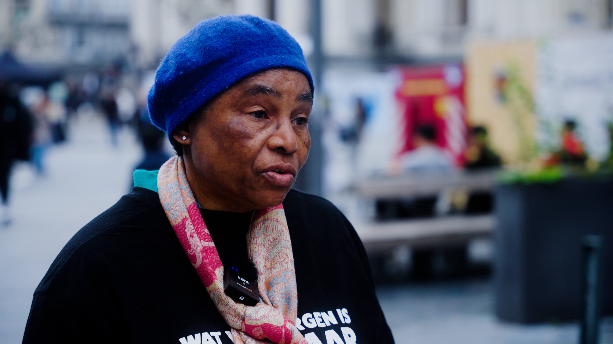
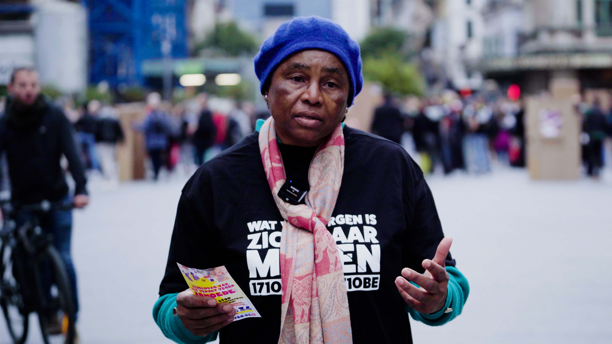
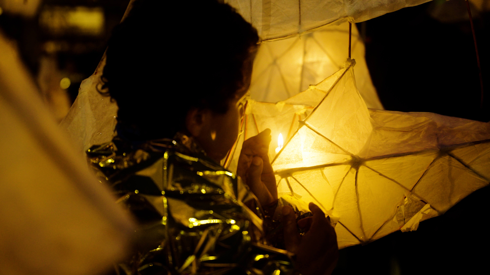
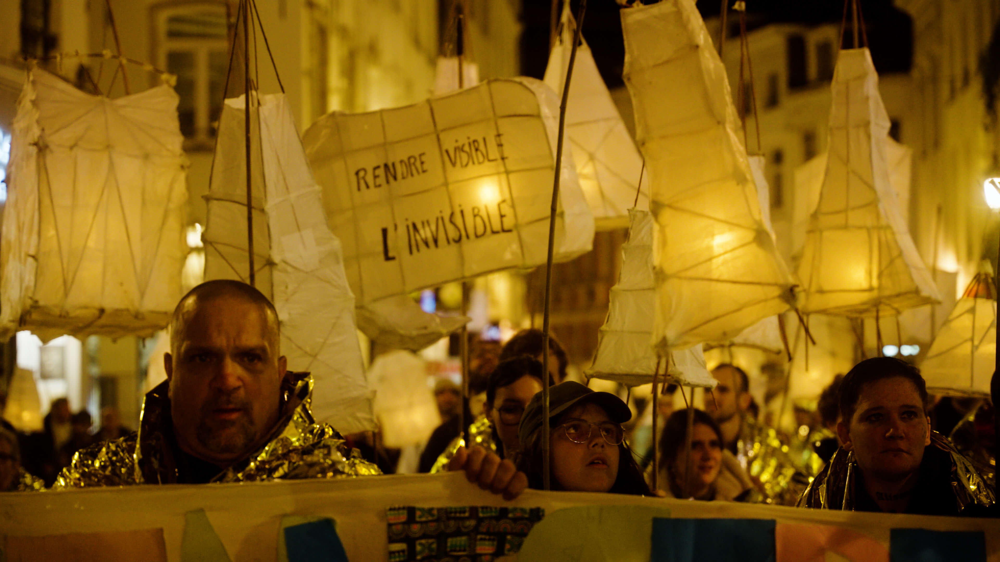